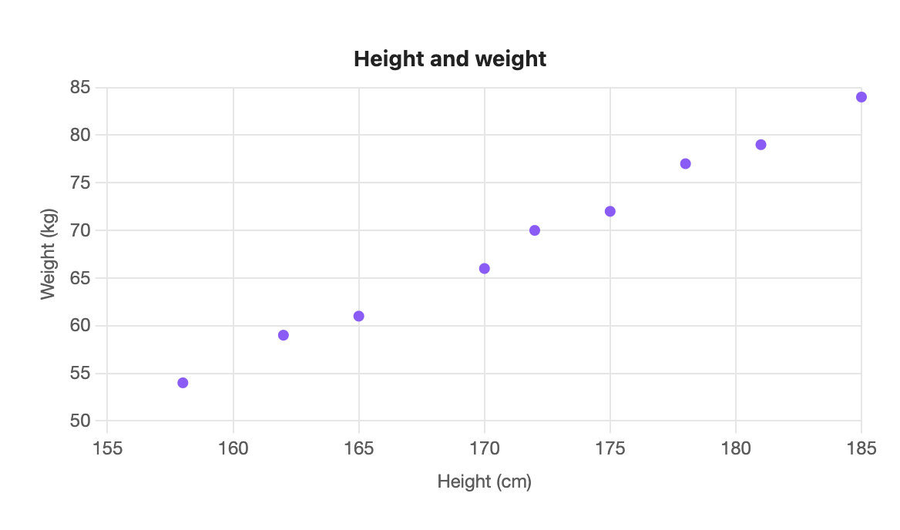
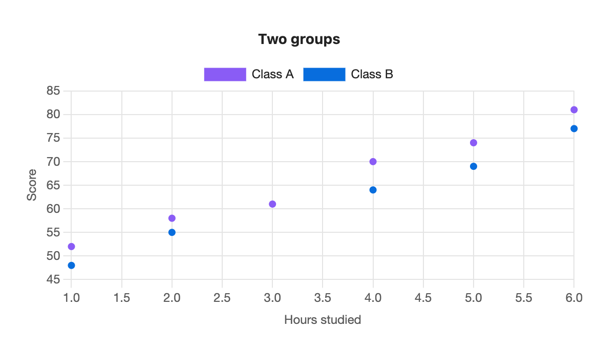

Scatter chart
A scatter plots numbers against numbers. The first column is the horizontal axis, and each other column is a set of points.

```s-chart
type: scatter
title: Height and weight
x-label: Height (cm)
y-label: Weight (kg)
---
| Height | Weight |
| ------ | ------ |
| 158 | 54 |
| 162 | 59 |
| 165 | 61 |
| 170 | 66 |
| 172 | 70 |
| 175 | 72 |
| 178 | 77 |
| 181 | 79 |
| 185 | 84 |
```When to use it
Use a scatter to see whether two measures move together: height and weight, hours and score, price and sales.
Options
| Option | On a scatter chart |
|---|---|
type: scatter | Required. |
title | Text above the chart. |
x-label | Title for the horizontal axis, which comes from the first column. |
y-label | Title for the vertical axis. |
legend | top, bottom or none. Shown for two or more sets of points. |
height | Chart height in pixels, 120 to 1200. |
colors | One colour per set of points. |
palette | A palette from settings. |
source, x, y | Draw from note properties. x must be a number property. |
stacked and horizontal have no effect.
The first column must be numbers
Unlike other types, the first column of a scatter is a number axis, not labels. A cell such as one stops the chart with "scatter needs a number in the first column". The number formats from Writing the table all work here.
Two sets of points
Each extra column is another set of points, in its own colour. An empty cell skips that point.

```s-chart
type: scatter
title: Two groups
x-label: Hours studied
y-label: Score
---
| Hours | Class A | Class B |
| ----- | ------- | ------- |
| 1 | 52 | 48 |
| 2 | 58 | 55 |
| 3 | 61 | |
| 4 | 70 | 64 |
| 5 | 74 | 69 |
| 6 | 81 | 77 |
```